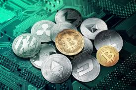

The legal status of cryptocurrencies varies substantially from country to country and is still undefined or changing in many of them. At least one study has shown that broad generalizations about the use of bitcoin in illicit finance are significantly overstated and that blockchain analysis is an effective crime fighting and intelligence gathering tool.[175] While some countries have explicitly allowed their use and trade,[176] others have banned or restricted it. According to the Library of Congress in 2021, an "absolute ban" on trading or using cryptocurrencies applies in 9 countries: Algeria, Bangladesh, Bolivia, China, Egypt, Iraq, Morocco, Nepal, and the United Arab Emirates. An "implicit ban" applies in another 39 countries or regions, which include: Bahrain, Benin, Burkina Faso, Burundi, Cameroon, Chad, Cote dIvoire, the Dominican Republic, Ecuador, Gabon, Georgia, Guyana, Indonesia, Iran, Jordan, Kazakhstan, Kuwait, Lebanon, Lesotho, Macau, Maldives, Mali, Moldova, Namibia, Niger, Nigeria, Oman, Pakistan, Palau, Republic of Congo, Saudi Arabia, Senegal, Tajikistan, Tanzania, Togo, Turkey, Turkmenistan, Qatar and Vietnam.[177] In the United States and Canada, state and provincial securities regulators, coordinated through the North American Securities Administrators Association, are investigating "Bitcoin scams" and ICOs in 40 jurisdictions.[178]Various government agencies, departments, and courts have classified bitcoin differently. China Central Bank banned the handling of bitcoins by financial institutions in China in early 2014.In Russia, though owning cryptocurrency is legal, its residents are only allowed to purchase goods from other residents using the Russian ruble while nonresidents are allowed to use foreign currency.[179] Regulations and bans that apply to bitcoin probably extend to similar cryptocurrency systems.[180]In August 2018, the Bank of Thailand announced its plans to create its own cryptocurrency, the Central Bank Digital Currency (CBDC).[181]
Legal concerns relating to an unregulated global economy
As the popularity and demand for online currencies has increased since the inception of bitcoin in 2009,[190] so have concerns that such an unregulated person to person global economy that cryptocurrencies offer may become a threat to society. Concerns abound that altcoins may become tools for anonymous web criminals.[191] Cryptocurrency networks display a lack of regulation that has been criticized as enabling criminals who seek to evade taxes and launder money. Money laundering issues are also present in regular bank transfers, however with bank-to-bank wire transfers for instance, the account holder must at least provide a proven identity. Transactions that occur through the use and exchange of these altcoins are independent from formal banking systems, and therefore can make tax evasion simpler for individuals. Since charting taxable income is based upon what a recipient reports to the revenue service, it becomes extremely difficult to account for transactions made using existing cryptocurrencies, a mode of exchange that is complex and difficult to track.[191] Systems of anonymity that most cryptocurrencies offer can also serve as a simpler means to launder money. Rather than laundering money through an intricate net of financial actors and offshore bank accounts, laundering money through altcoins can be achieved through anonymous transactions.[191]Cryptocurrency makes legal enforcement against extremist groups more complicated, which consequently strengthens them.[192] White supremacist Richard Spencer went as far as to declare bitcoin the "currency of the alt-right".[193]